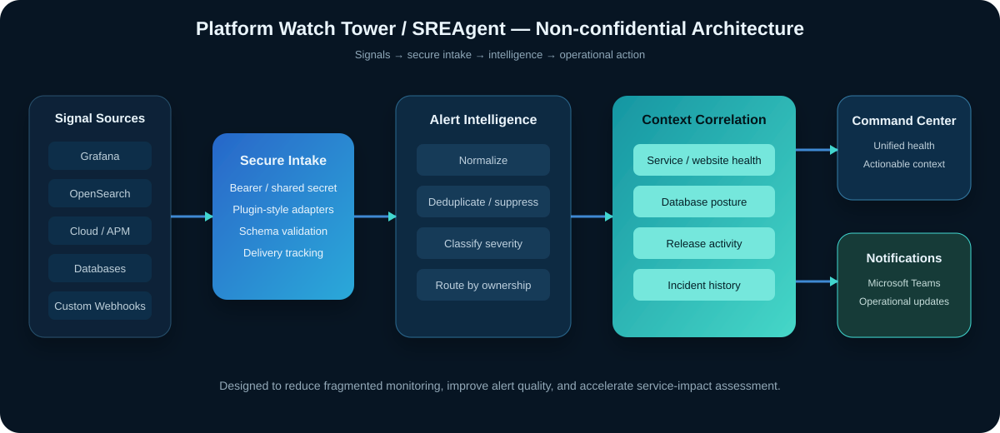

Overview
Production teams often rely on separate dashboards for application health, infrastructure, websites, databases, releases, and incidents. That fragmentation makes it harder to answer the most important questions during an issue: What changed? What is affected? Is the alert real? Who owns the response?
I built and enhanced Platform Watch Tower—also referred to as SREAgent—as an internal operational intelligence layer. The platform brings monitoring and reliability signals into a unified command-center experience and adds context before notifications are sent.
Architecture

Core capabilities
Unified reliability view
Centralizes service health, website availability, database posture, infrastructure status, releases, incidents, and alert activity.
Secure alert intake
Supports monitored inbound webhooks with shared-secret or bearer-token authentication and a plugin-style integration model.
Alert intelligence
Normalizes source-specific payloads, classifies severity, deduplicates recurring signals, applies suppression concepts, and tracks delivery.
Context correlation
Validates an alert against current service, website, database, infrastructure, and release conditions before escalation.
Website reliability
Tracks availability, latency bands, TLS certificate posture, security headers, content freshness, internal URL failures, and synthetic checks.
Database reliability
Surfaces blockers, root sessions, top queries, backup health, TempDB pressure, storage I/O, connection groups, and scheduled-job status.
Engineering workflow
- Receive a signal from a monitoring platform or custom webhook.
- Authenticate and validate the payload before processing.
- Translate the source payload into a common alert model.
- Apply severity, deduplication, suppression, ownership, and routing logic.
- Enrich the alert with service, website, database, infrastructure, release, and incident context.
- Present the result in the operational command center and send actionable updates to Microsoft Teams.
- Retain operational history for trend review, governance, and continuous improvement.
Technology and practices
The work spans Python, TypeScript, C#/.NET, SQL, PowerShell, Grafana, OpenSearch, cloud monitoring, Microsoft Teams integrations, API/webhook design, operational dashboards, authentication, alert routing, incident workflows, and SLO/SLA documentation.
The design emphasis is not to replace every APM or monitoring product. It complements those tools by adding operational context, alert quality, business-service visibility, incident readiness, and a common reliability workflow.
Operational outcomes
- Reduced dependence on scattered dashboards during triage.
- Improved clarity around service impact, release context, and alert ownership.
- Supported more proactive communication before business escalation.
- Created a framework for alert normalization, noise reduction, and delivery tracking.
- Improved management visibility through reliability posture, monitoring maturity, and operational reporting.